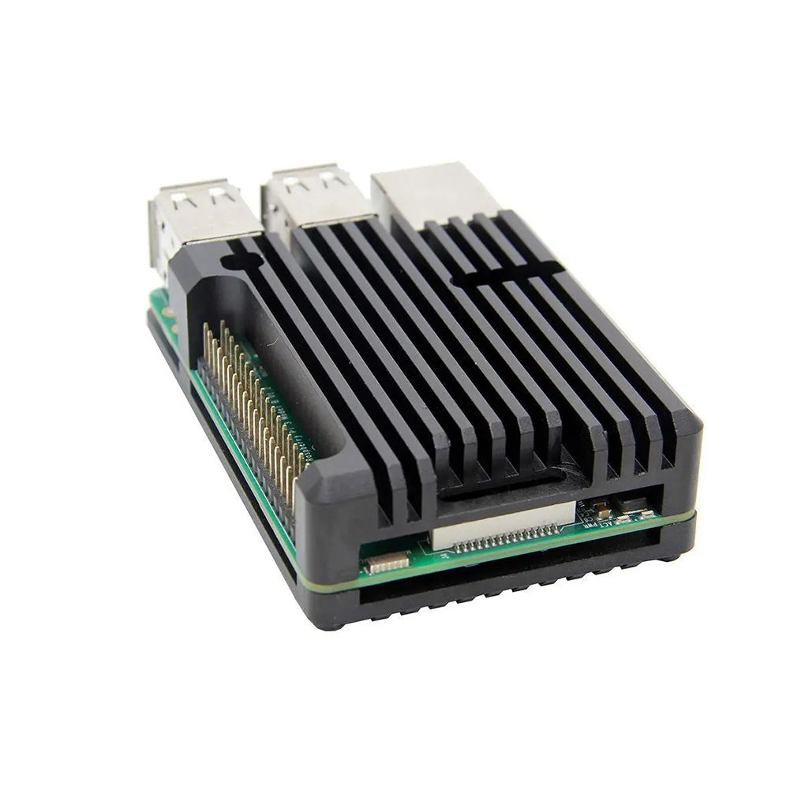

Корпус алюминиевый для Raspberry Pi 3B/B+ (пассивный)
МеханикаЭто пассивный алюминиевый корпус-радиатор для Raspberry Pi 3 Model B/B+, предназначенный для защиты платы и отвода тепла без вентилятора. По конструкции рассчитан на формат Raspberry Pi 3 B/B+ и используется там, где важны компактность и бесшумное охлаждение.
Корпус выполнен из алюминия и работает как пассивный теплоотвод: тепло от SoC и других горячих элементов передаётся на стенки корпуса. Такой вариант обычно выбирают для домашних медиаплееров, сетевых устройств, автоматизации и других проектов, где нежелателен шум от вентилятора. Для Raspberry Pi 3 Model B+ официальный материал по плате и case drawings подтверждают наличие отдельного чертежа корпуса и важность работы в хорошо вентилируемом окружении. При использовании в закрытом кейсе важно не перекрывать корпус и не ухудшать теплоотвод.